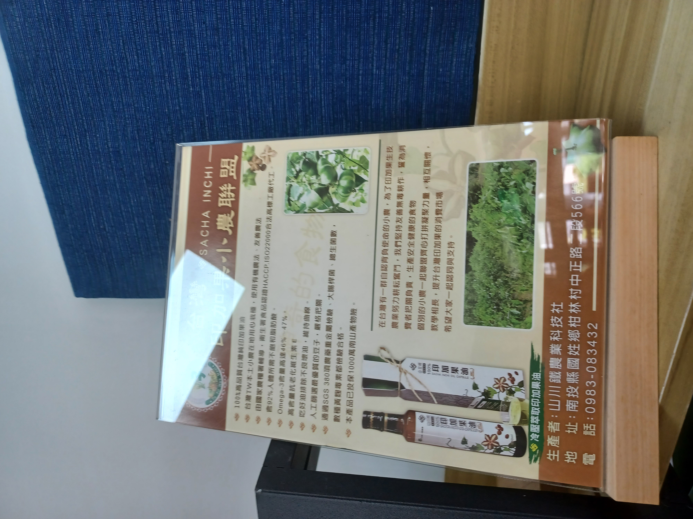

油你真好‧賽夏風情
商家簡介
油你真好，顧名思義這家店就是主打跟油有關的產品，這裡賣的油是台灣小農自產的印加果油，除此之外，原住民族農業生產的保健食品也可以在這間店找到。結合原民文化園區，這裡也販賣與原民風相關的文創商品。這家店可以算是山川鐵農業科技社在新竹的分店兼實體店，提供顧客實體接觸到產品的管道，尤其是原民風的布料，可以讓客人最直接的摸到布的質料。
如何推廣
一進到店裡可以看到這間店分隔為兩邊，一邊主要為印加果油系列產品、保健食品以及一些茶具，另一邊主要為原民風格的商品，像是服裝、包包、配件、布料等等......。這間店主要的原住民風格是泰雅族與賽夏族，泰雅族風格是為了配合這個原住民園區，而這間店的老闆是賽夏族的，所以也有許多賽夏風格的文創商品，像是賽夏族的雷女紋，不過店長姐姐也有說到，雷女紋容易被大家誤認為納粹的符號或是佛教相關的符號，因此可能非賽夏族的客人會有些卻步。店長姐姐透過敏銳的觀察力，從客人進入店內的行為偏好去推薦不同的商品，或是與客人談天，為客人提供各種不同的資訊，像是如果客人對於圖騰有疑問、想知道哪裡有賣原民傳統食物、這個園區有什麼活動，店長姐姐都會很熱心向大家解惑。店內有許多價格平易近人又有帶有原民風的選物或是手作品，這是因應客人對於商品的需求，大多觀光客可能只是想要接觸原民風格並且喜愛原民風格的物件，但是並不追求一定要傳統的原民作品，因為傳統原民布料或是手作品製作的工時或是技藝的精緻會使得商品的價格非常昂貴，於是這間店提供一般民眾便利的管道去接觸原民風格、認識原民文化。
推廣的特色
根據觀察以及互動，可以知道這間店的對於原民文化推廣有三大特色，第一、針對不同的需求給予不同方向的推廣：店長姊姊會根據客人的行為與反應向對方搭話並針對對方感興趣的話題連結店內產品或是原民之事進行回應。第二、知識量的具備：若是沒有對於族裔及原民相關活動有足夠的知識量，將難以回答客人提出的問題，除了平時有關注原民新聞的習慣，還要對於整個園區都十分熟悉，以便帶領客人從園區認識原民文化。第三、對顧客需求的靈敏度：了解一般顧客心理對於原民文創商品價位的考量，提供較平價但不失品質的好物，讓顧客可以輕易的體驗原民風格。
